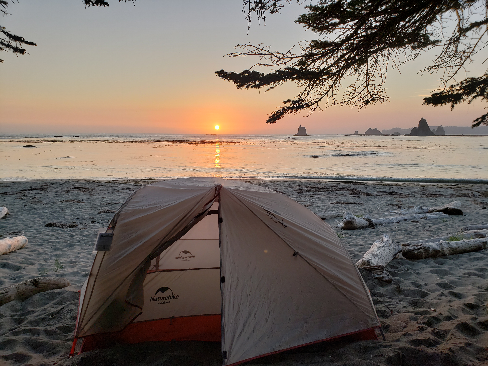
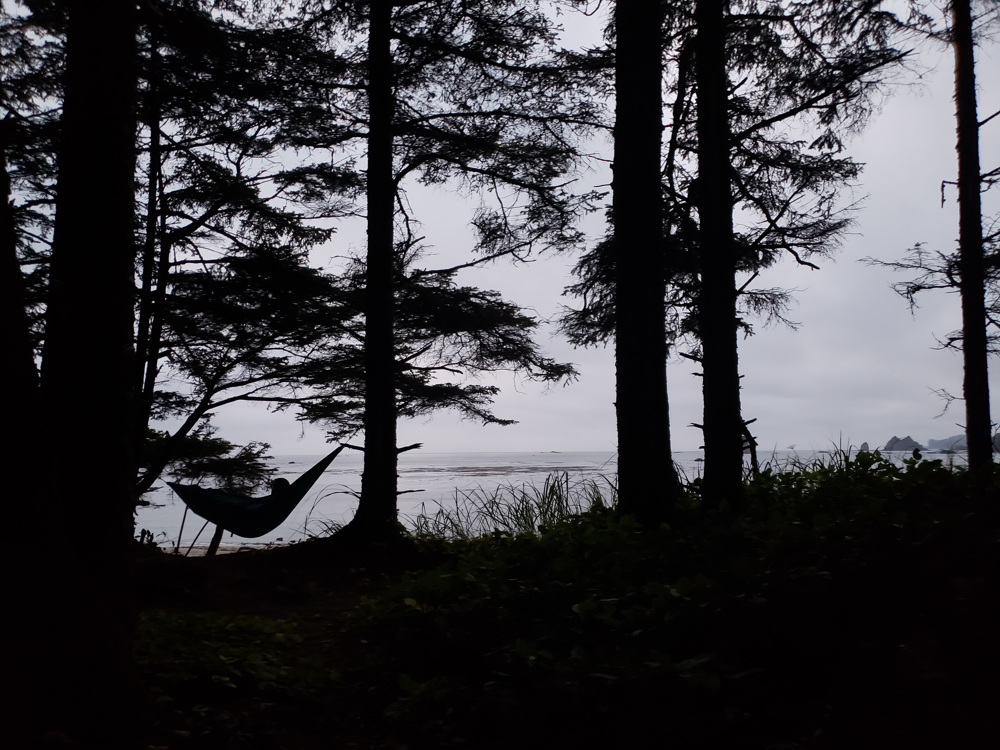

A coastal beach trail along the Olympic Peninsula. Toleak Point can be accessed from the south at Oil City, or from the north at Third Beach
A waterfall formed by glacial floods at the end of the last ice age. This waterfall cuts through layers of basalt flows to form a deep canyon.